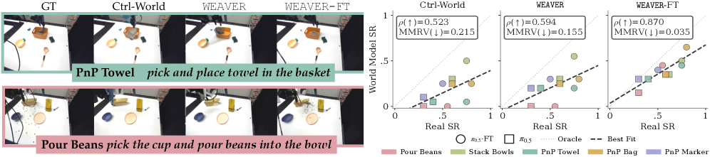
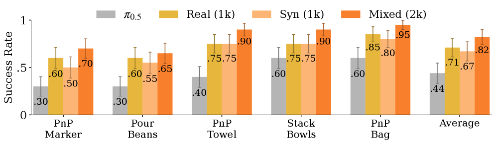
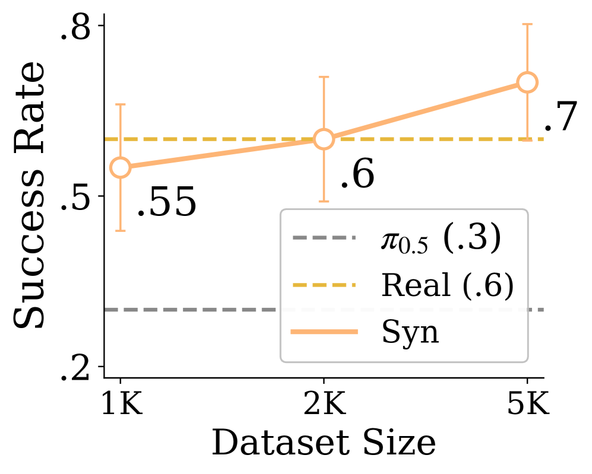
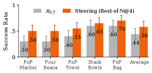

WEAVER: a world model that is faithful, consistent, and fast at once
WEAVER is a paper about the world model itself. The policy is still π0.5; the question is whether the learned simulator under it can be accurate enough, stable enough, and fast enough to evaluate policies, generate training data, and plan during execution.
The three constraints
The paper reduces robot world modeling to three checks. Fidelity asks whether imagined trajectories correlate with reality. Consistency asks whether the rollout stays coherent when the model keeps feeding on its own future predictions. Efficiency asks whether the model can generate futures quickly enough to be used inside a real robot loop.
Those three checks are adversarial to each other. A video model can look faithful and still be too slow. A compact latent model can be fast and still lose information needed by a visuomotor policy. A model can produce good first seconds and still drift over a 10-second rollout. WEAVER's claim is specific: on its manipulation setup, one world model can satisfy all three well enough to become a policy evaluator, a synthetic-data filter, and a test-time planner.
How WEAVER reaches all three
WEAVER stands for World Estimation Across Views for Embodied Reasoning. The model has 928M parameters and predicts future multi-view robot observations in a learned latent space. The important part is how the architecture assigns one job to each constraint.
Fidelity. Each camera view is encoded with a pretrained Stable Diffusion 3 VAE encoder. The robot's proprioceptive state is projected into the same token stream. WEAVER predicts future external views, wrist views, and future proprioception, so the imagined state is not only a video; it also contains the robot-state information needed for control.
Consistency. The transformer receives sparse long-term memory, a short recent history, and an h-step action plan. It then generates the next h latents with a flow-matching objective. Diffusion Forcing gives different future steps independent noise levels during training, which pressures the model to handle partially denoised long rollouts instead of only clean one-step prediction.
Efficiency. SPRINT blocks drop many patch tokens, KV caching reuses memory and history tokens across denoising steps, and a ReFlow post-training stage distills WEAVER-FT into a lower-NFE model for planning. The reward head and critic also run directly on latents plus the language instruction, so planning does not need to decode every candidate future and send it to a separate VLM judge.

Pretraining and adaptation
The pretraining stage builds the general robot simulator. WEAVER is pretrained on DROID for 1M gradient steps with batch size 32, learning rate 1e-4, EMA 0.9999, and 4 H100 GPUs for about 10 days. The model uses 32 transformer layers, hidden dimension 1536, 16 heads, SPRINT probability 0.5, and 5 Hz world-model imagination after downsampling.
The reward and critic are trained on top of WEAVER latents. The authors annotate DROID trajectories with RoboMeter progress rewards, interpolate the 1 fps labels back to the full video length, shift the progress signal into a negative reward range, and train latent reward/value heads with language instruction features.
The task-specific adaptation is deliberately small: 250 real trajectories total, 50 for each of five tasks, plus another 100 evaluation trajectories. WEAVER is finetuned for 16K steps at learning rate 2e-5, taking about 6 hours on 4 H100 GPUs. For the planning variant, WEAVER-ReFlow adds 2K rectified-flow post-training steps so the same finetuned world model can run with fewer denoising evaluations.
How the experiments are built
The experiments test the world model before using it to change the policy. First, WEAVER is compared with Ctrl-World, a 1.5B-parameter DROID-trained diffusion world model. The evaluation uses 256 DROID validation trajectories and 100 out-of-distribution real-robot trajectories collected from π0.5. Each model autoregressively generates 10-second sequences, predicting 15-step action chunks at a time. FID, FVD, and LPIPS compare decoded generations against ground-truth videos.

The downstream experiments then ask whether the simulator is useful rather than only visually plausible.
| Use | Experimental question | Headline result |
|---|---|---|
| Policy evaluation | Replay real action trajectories inside the world model and compare imagined success with real success. | WEAVER-FT reaches Spearman 0.870 and Pearson 0.863 in the appendix table; the main text reports ρ = 0.870 correlation with real-world success rate. |
| Policy improvement | Use WEAVER to sample and filter high-advantage action segments, then distill them into π0.5. | Average success rises from 0.44 for π0.5 to 0.67 with synthetic data, 0.71 with real data, and 0.82 with mixed data. |
| Test-time planning | Sample four action chunks, imagine each future, score reward plus critic value, and execute the best chunk. | Average success improves from 0.44 to 0.58 across five tasks, with dynamics prediction around 20x faster than Ctrl-World at horizon 15, batch size 4. |




Limitations
WEAVER leans on pretrained components: the SD3 VAE, DROID-scale robot data, and RoboMeter reward labels. The strongest results come after finetuning on the target robot tasks, especially for pouring beans, where granular dynamics are underrepresented in pretraining. The paper also names partial observability, missing tactile sensing, deformable-object physics, reward-label noise, and online latency as remaining bottlenecks.
The clean adversarial read is this: WEAVER improves the world model body, but every downstream use still depends on trusting imagined futures. A faster, more faithful simulator raises the ceiling for evaluation and planning; it also makes uncertainty estimation, validation, and safeguards more important because the robot is now acting on model-generated futures before the real world confirms them.
References
- Arnav Kumar Jain, Yilin Wu, Jesse Farebrother, Gokul Swamy, Andrea Bajcsy: WEAVER, Better, Faster, Longer: An Effective World Model for Robotic Manipulation (arXiv:2606.13672).
- Project page with code, models, and videos: arnavkj1995.github.io/WEAVER.
- Main baseline: Ctrl-World. Base robot policy: π0.5.